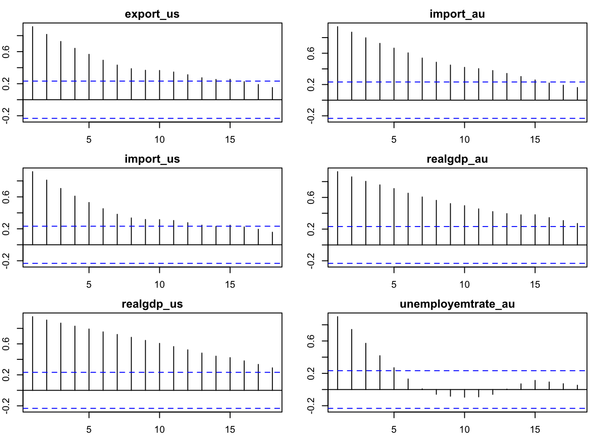
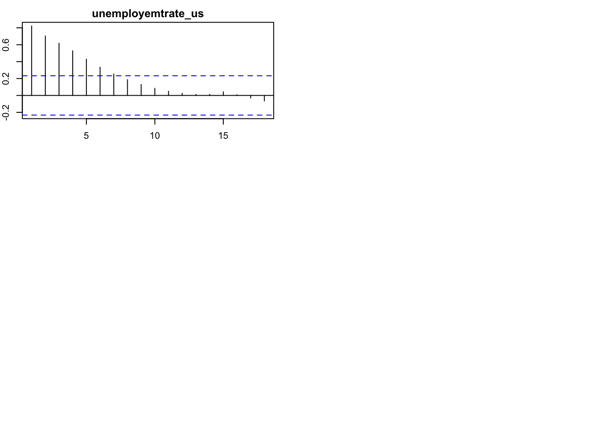

# log transformation of data
cpi_au <- log(cpi_au)
cpi_us <- log(cpi_us)
rgdp_au <- log(rgdp_au)
rgdp_us <- log(rgdp_us)
impor_au <- log(impor_au)
impor_us<- log(impor_us)
expor_au <- log(expor_au)
expor_us<- log(expor_us)
gprice <- log(gprice)test


x_varibales <- na.omit(merge(gprice,
cpi_au, cpi_us,
crate_au, crate_us,
expor_au, expor_us,
impor_au, impor_us,
rgdp_au, rgdp_us,
unemr_au, unemr_us))
colnames(x_varibales) = c("gold price",
"cpi_au", "cpi_us",
"cashrate_au", "cashrate_us",
"export_au", "export_us",
"import_au", "import_us",
"realgdp_au", "realgdp_us",
"unemployemtrate_au", "unemployemtrate_us")# Compute correlation matrix
correlation_matrix <- cor(merged_data)
# Find the row number corresponding to "erate"
erate_row <- which(rownames(correlation_matrix) == "erate")
# Extract correlations between erate and other variables
correlations_erate <- correlation_matrix[erate_row, names(merged_data) != "erate"]
# Print correlation values
print(correlations_erate) exchange rate cpi_au cpi_us cashrate_au cashrate_us export_au export_us
import_au import_us realgdp_au realgdp_us unemployemtrate_au
unemployemtrate_usAugmented Dickey-Fuller test for log transformed variables except exchange rate and cash rate.
par(mfcol = c(3, 2), mar=c(2,2,2,2))
for (i in 1:6){
acf = acf(merged_data[,i], plot = FALSE)[1:20]
plot(acf, main = "")
title(main = paste(colnames(merged_data)[i]), line = 0.5)
}
par(mfrow = c(3, 2), mar=c(2,2,2,2))
for (i in 7:13){
acf = acf(merged_data[,i], plot = FALSE)[1:20]
plot(acf, main = "")
title(main = paste(colnames(merged_data)[i]), line = 0.5)
}

adf_test <- list()
for (i in 1:13) {
adf_result = adf.test(merged_data[,i], k = 4)
adf_test[[i]] <- adf_result
}
print(adf_test)[[1]]
Augmented Dickey-Fuller Test
data: merged_data[, i]
Dickey-Fuller = -2.0604, Lag order = 4, p-value = 0.5507
alternative hypothesis: stationary
[[2]]
Augmented Dickey-Fuller Test
data: merged_data[, i]
Dickey-Fuller = -1.9709, Lag order = 4, p-value = 0.5871
alternative hypothesis: stationary
[[3]]
Augmented Dickey-Fuller Test
data: merged_data[, i]
Dickey-Fuller = -1.355, Lag order = 4, p-value = 0.8378
alternative hypothesis: stationary
[[4]]
Augmented Dickey-Fuller Test
data: merged_data[, i]
Dickey-Fuller = -0.84089, Lag order = 4, p-value = 0.9536
alternative hypothesis: stationary
[[5]]
Augmented Dickey-Fuller Test
data: merged_data[, i]
Dickey-Fuller = -2.9006, Lag order = 4, p-value = 0.2088
alternative hypothesis: stationary
[[6]]
Augmented Dickey-Fuller Test
data: merged_data[, i]
Dickey-Fuller = -2.3971, Lag order = 4, p-value = 0.4137
alternative hypothesis: stationary
[[7]]
Augmented Dickey-Fuller Test
data: merged_data[, i]
Dickey-Fuller = -2.8393, Lag order = 4, p-value = 0.2337
alternative hypothesis: stationary
[[8]]
Augmented Dickey-Fuller Test
data: merged_data[, i]
Dickey-Fuller = -1.6656, Lag order = 4, p-value = 0.7113
alternative hypothesis: stationary
[[9]]
Augmented Dickey-Fuller Test
data: merged_data[, i]
Dickey-Fuller = -3.132, Lag order = 4, p-value = 0.1147
alternative hypothesis: stationary
[[10]]
Augmented Dickey-Fuller Test
data: merged_data[, i]
Dickey-Fuller = -3.0487, Lag order = 4, p-value = 0.1485
alternative hypothesis: stationary
[[11]]
Augmented Dickey-Fuller Test
data: merged_data[, i]
Dickey-Fuller = -2.7396, Lag order = 4, p-value = 0.2743
alternative hypothesis: stationary
[[12]]
Augmented Dickey-Fuller Test
data: merged_data[, i]
Dickey-Fuller = -2.1174, Lag order = 4, p-value = 0.5275
alternative hypothesis: stationary
[[13]]
Augmented Dickey-Fuller Test
data: merged_data[, i]
Dickey-Fuller = -2.7746, Lag order = 4, p-value = 0.2601
alternative hypothesis: stationaryadf_table <- data.frame(p_value = numeric(length(adf_test)))
for (i in 1:length(adf_test)) {adf_table[i, "p_value"] = round(adf_test[[i]]$p.value,3)
}
rownames(adf_table)<- c("exchange rate",
"cpi_au", "cpi_us",
"cashrate_au", "cashrate_us",
"export_au", "export_us",
"import_au", "import_us",
"realgdp_au", "realgdp_us",
"unemployemtrate_au", "unemployemtrate_us")
colnames(adf_table)<- c("P-value")
print(adf_table) P-value
exchange rate 0.551
cpi_au 0.587
cpi_us 0.838
cashrate_au 0.954
cashrate_us 0.209
export_au 0.414
export_us 0.234
import_au 0.711
import_us 0.115
realgdp_au 0.149
realgdp_us 0.274
unemployemtrate_au 0.528
unemployemtrate_us 0.260#clear that all >0.05 and reject the null that is stationary#take the first difference
dff_merged_data <- na.omit(merged_data - lag(merged_data))# ADF test
dff_adf_ <- list()
for (i in 1:13) {
dff_adf_result = adf.test(dff_merged_data[,i], k = 4)
dff_adf_[[i]] <- dff_adf_result
}Warning in adf.test(dff_merged_data[, i], k = 4): p-value smaller than printed
p-value
Warning in adf.test(dff_merged_data[, i], k = 4): p-value smaller than printed
p-value# View the ADF test results
dff_adf_table <- data.frame(p_value = numeric(length(dff_adf_)))
# Fill in the data frame with the test results
for (i in 1:length(dff_adf_)) {
dff_adf_table[i, "p_value"] = round(dff_adf_[[i]]$p.value,3)
}
rownames(dff_adf_table)<- c("exchange rate",
"cpi_au", "cpi_us",
"cashrate_au", "cashrate_us",
"export_au", "export_us",
"import_au", "import_us",
"realgdp_au", "realgdp_us",
"unemployemtrate_au", "unemployemtrate_us")
colnames(dff_adf_table)<- c("P-value")
print(dff_adf_table) P-value
exchange rate 0.035
cpi_au 0.442
cpi_us 0.279
cashrate_au 0.038
cashrate_us 0.019
export_au 0.052
export_us 0.024
import_au 0.010
import_us 0.017
realgdp_au 0.034
realgdp_us 0.010
unemployemtrate_au 0.023
unemployemtrate_us 0.021#take the second difference
dff_dff_data <- subset(dff_merged_data, select = -c(realgdp_us))
# Create a new dataset with the remaining variables
dff_dff_merged_data <- na.omit(dff_dff_data- lag(dff_dff_data)) dff_dff_adf_ <- list()
for (i in 1:12) {
dff_dff_adf_result = adf.test(dff_dff_merged_data[,i], k = 4)
dff_dff_adf_[[i]] <- dff_dff_adf_result
}Warning in adf.test(dff_dff_merged_data[, i], k = 4): p-value smaller than
printed p-value
Warning in adf.test(dff_dff_merged_data[, i], k = 4): p-value smaller than
printed p-value
Warning in adf.test(dff_dff_merged_data[, i], k = 4): p-value smaller than
printed p-value
Warning in adf.test(dff_dff_merged_data[, i], k = 4): p-value smaller than
printed p-value
Warning in adf.test(dff_dff_merged_data[, i], k = 4): p-value smaller than
printed p-value
Warning in adf.test(dff_dff_merged_data[, i], k = 4): p-value smaller than
printed p-value
Warning in adf.test(dff_dff_merged_data[, i], k = 4): p-value smaller than
printed p-value
Warning in adf.test(dff_dff_merged_data[, i], k = 4): p-value smaller than
printed p-value
Warning in adf.test(dff_dff_merged_data[, i], k = 4): p-value smaller than
printed p-value
Warning in adf.test(dff_dff_merged_data[, i], k = 4): p-value smaller than
printed p-value
Warning in adf.test(dff_dff_merged_data[, i], k = 4): p-value smaller than
printed p-value
Warning in adf.test(dff_dff_merged_data[, i], k = 4): p-value smaller than
printed p-value# View the ADF test results
dff_dff_adf_table <- data.frame(p_value = numeric(length(dff_dff_adf_)))
# Fill in the data frame with the test results
for (i in 1:length(dff_dff_adf_)) {
dff_dff_adf_table[i, "p_value"] = round(dff_dff_adf_[[i]]$p.value,3)
}
rownames(dff_dff_adf_table)<- c("exchange rate",
"cpi_au", "cpi_us",
"cashrate_au", "cashrate_us",
"export_au", "export_us",
"import_au", "import_us",
"realgdp_au",
"unemployemtrate_au", "unemployemtrate_us")
colnames(dff_dff_adf_table)<- c("P-value")
print(dff_dff_adf_table) P-value
exchange rate 0.01
cpi_au 0.01
cpi_us 0.01
cashrate_au 0.01
cashrate_us 0.01
export_au 0.01
export_us 0.01
import_au 0.01
import_us 0.01
realgdp_au 0.01
unemployemtrate_au 0.01
unemployemtrate_us 0.01